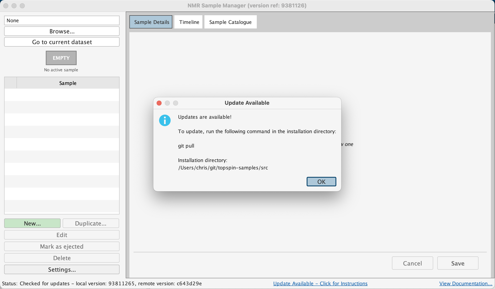

Installation
1. Clone the Repository
Choose a location where you have write permissions — your home directory for
single-user installations, or a shared lab directory for multi-user facilities.
You cannot install within Topspin's own
/opt/topspin... directories.
cd ~
git clone https://github.com/nmr-samples/topspin.gitIf you don't have git, download the repository as a ZIP file and extract it.
2. Configure Topspin's Python Path
In Topspin, type setres to open the Resource Editor. Navigate to
Directories → Manage source directories for edpul, edau, etc.
In the popup, select the Jython Programs tab and add the full
absolute path to your topspin/src directory (e.g.
/home/username/topspin/src or
/Users/username/topspin/src on macOS).
Save and restart Topspin.
3. Verify
Type samples in Topspin's command line. The Sample Manager window
should appear, showing a timeline of your experiments.

4. Configure root directories
In the samples app, click the Settings
button in the bottom-left corner and add your root directories (e.g. /home/user/nmr-data
or /Users/user/nmr-data). These are the directories where the app searches for samples to
catalogue.

Updating
The app checks for updates automatically on startup (if the spectrometer is online).
To update:
cd /path/to/topspin
git pullRestart Topspin to load the updated code.
Multi-User Installations
Install in a shared location accessible to all users. Each user then adds the shared path to their own
Topspin configuration via setres.
Uninstallation
Remove the Sample Manager path from setres, save, and restart
Topspin. Optionally delete the topspin directory. Your sample
metadata JSON files are not affected — they remain in your data directories.